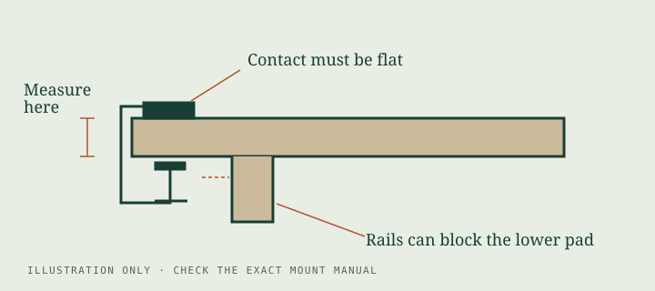

The desk comes first.
The arm comes second.
Five things to establish before choosing a monitor arm: the load, the mounting holes, the desktop, the space to move, and the installation method.
Begin with a small desk sketch
Before opening a shopping page, draw your desktop from above and from the side. Mark the wall, the desk edge, any shelf, and the position where you actually want the screen. Then mark the space your keyboard, pointing device and notebook need. The point is not to create a perfect plan. It is to discover whether an arm can solve the space problem you have.
Measure depth at the mounting position, including any gap behind the desk. An elbow that folds behind a display may need room near the wall. Leave space for connectors and a cable bend rather than assuming the back of the screen can sit against another surface. On a moving desk, consider the full movement of the desktop as well as the arm.
Use manufacturer drawings to translate those measurements into an installation question. A maximum extension describes a limit, not necessarily the position you can use comfortably. Our illustrations explain what to inspect; they are not scale drawings or mounting templates.
Find the load that the arm will hold
Find the monitor’s weight without its original stand in its documentation. A boxed shipping weight or a weight that includes the stand is the wrong starting point. Account for accessories that will actually move with the display, including adapters or attached devices, and check the manufacturer’s instructions for how those loads should be treated.
Read both ends of a load range. The Ergotron LX 45-241-224 is specified for 7–25 lb; a 6 lb display is below that range. VIVO lists up to 22 lb for the STAND-V001, while the cited product page does not establish a minimum. Missing information is a question to resolve, not permission to invent a zero minimum.
Shape matters too. A deep screen places its center of mass differently from a shallow one. Ergotron explicitly qualifies capacity for screens deeper than 2.5 in, and notes reduced lower lift movement above 20 lb. If your monitor is curved, deep or fitted with accessories, ask about that exact configuration.
Check the holes and the hardware
VESA 75 × 75 and 100 × 100 refer to the spacing of mounting holes in millimeters. Confirm the monitor’s stated pattern; a matching screen diagonal does not tell you the pattern. Both arms in our comparison list these two patterns.
Hole spacing is only part of attachment. A recessed mounting area, a removable cover, a connector near the plate, or the wrong screw length can interfere with assembly. Use the hardware and spacers specified by the monitor and mount documentation. Do not assume that a screw is correct simply because it starts threading.
An adapter introduces another compatibility and load question. Our checker does not approve adapters or convert an unknown pattern into a match. Identify the exact monitor, adapter and arm together and seek the relevant manufacturer confirmation before assembly.
Read the edge, top and bottom

Measure the desktop where the pads will actually contact it. A rounded or beveled edge may not provide the flat contact you expected from measuring farther in. Look underneath for a metal frame, apron, drawer, rail or cable tray. The lower pad needs the contact area and clearance required by the actual clamp.
Desk thickness is not desk strength. A hollow-core top, thin laminate, glass panel or damaged board cannot be judged from a thickness number alone. Ask the desk manufacturer whether the proposed concentrated clamping load is permitted. A reinforcement plate can change contact geometry; do not assume it makes an unsuitable material safe.
A grommet mount is a separate installation method. Check the hole size, location, desktop material and required hardware in the exact mount manual. Never treat an existing cable hole as automatic approval to mount there. Drilling or modifying a desk should wait until the desk and mount instructions support the plan.
Pause on uncertainty. If either manufacturer cannot confirm the desk material or mounting arrangement, resolve that before installation. A specification checker cannot inspect a desktop or establish its load-bearing capacity.
Before you pick up a tool
Read the supplied manual all the way through. Identify the exact mounting route and hardware before removing the monitor’s stand. Check warnings, required tools, cable routing and the order of assembly. Support the display as instructed and arrange help if the manual calls for it; do not improvise around a heavy or awkward screen.
Follow specified fastener and tension adjustments. A lift mechanism needs adjustment for its load according to the manual, and a height collar may need tightening at a particular stage. Avoid giving a screw “a little extra” without reference to the instructions. Check that cables can move throughout the intended range without becoming taut, trapped or pulled at connectors.
At the end, review the installation using the manufacturer’s inspection guidance. Recheck the arrangement after changing the monitor, adding an accessory or moving the clamp. Unexpected movement, a shifting clamp or visible desk damage is a reason to stop using the setup and consult the manufacturer.
The shortlist checklist
- Load: monitor without stand, plus the attached configuration; compare minimum and maximum.
- Attachment: exact VESA pattern, plate access, prescribed screws and any approved adapter.
- Desk: confirmed material suitability, actual contact thickness, flat pads and unobstructed underside.
- Position: required screen location, wall and elbow clearance, screen depth and usable travel.
- Installation: the correct manual, required hardware and a plan to support the display.
The desk-fit checker handles only the load, VESA pattern and selected clamp specifications. Use it as a preliminary filter within this longer checklist. The VIVO vs LX comparison explains the exact qualifications for the two models.
Read the original instructions
- VIVO STAND-V001 manufacturer product page and assembly manual (PDF).
- Ergotron LX data sheet (PDF), assembly manual (PDF) and dimensional illustrations (PDF).
Manufacturer documents checked October 27, 2026. These are non-affiliate reference links. This guide is an original explanatory synthesis, not a substitute for the supplied instructions, a structural assessment or professional installation advice. We have not physically tested these arms.